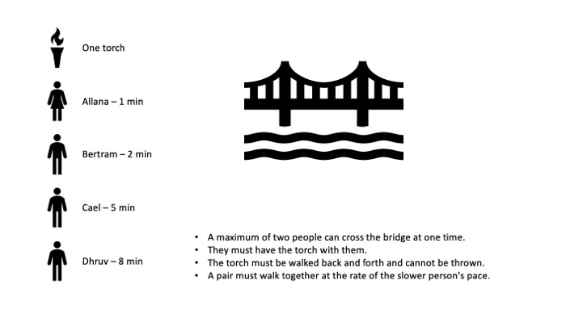

Assignment 1
Name: Azad Helmy
ID: 10363160
Question:
Four people are crossing a bridge at night, so they all need a torch -
but they just have one torch that only lasts 15 minutes. Allana can cross in one
minute, Bertram in two minutes, Cael in five minutes and Dhruv in eight minutes. the bridge
is old and rickety, so no more than two people can cross at a time, and when two cross, they
have to go at the slower person's pace. how do all four people get across in 15 minutes

Answer:
-
First, Allana and Bertram cross the bridge (total 2 min) .
-
Then Allana crosses back, leaving Bertram behind (total 3 min)
-
Since Allana crossed back, she sends Cael and Dhruv across to reunite with Bertram (total 11 min)
-
With the trio Cael, Dhruv and Bertram at the end of the bridge, Betram goes back for Allana (total 13 min)
-
Bertram picks up Allana and they cross the bridge together and the gang is happily reunited in a total time
of 15 minutes! (total 15 min)